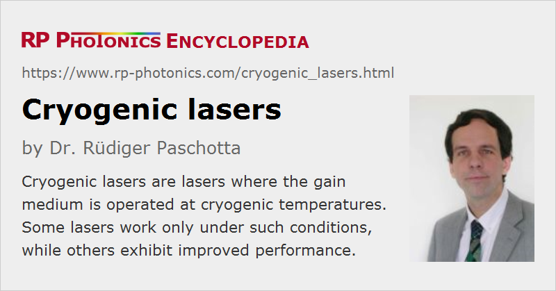

Cryogenic Lasers
Definition: lasers where the gain medium is operated at cryogenic temperatures
Alternative term: cryogenically cooled lasers
German: tieftemperaturgekühlte Laser
How to cite the article; suggest additional literature
Author: Dr. Rüdiger Paschotta
The idea of operating lasers at low temperatures is not exactly new: the second laser in history already was a cryogenic one [1]. While this concept was originally used just because room-temperature operation was hard to achieve, a renewed interest in cryogenic operation for high-power lasers and amplifiers developed in the 1990s.
In high-power laser sources, thermal effects such as depolarization loss, thermal lensing or even fracture of the laser crystal can be a real problem limiting the performance. A number of the detrimental thermal effects can be effectively suppressed by cryogenic cooling, meaning cooling of the gain medium to low temperatures such as 77 K (the temperature of liquid nitrogen) or even 4 K (liquid helium). The main effects of such cooling are:
- The thermal conductivity of the gain medium is strongly increased, mainly because the mean free path length of phonons is increased. Therefore, temperature gradients are strongly decreased. As an example, the thermal conductivity of YAG increases by a factor of 7 when the temperature is reduced from 300 K to 77 K.
- The thermal expansion coefficient is also strongly reduced. This together with the reduced temperature gradients reduces thermal lensing from bulging and stress, and of course the tendency for stress fracture.
- The thermooptic coefficient (dn / dT) is also reduced, further reducing thermal lensing.
- The laser and absorption cross sections of rare earth ions are increased, essentially because thermally induced broadening is reduced. As a result, saturation powers are reduced, and the laser gain is increased. Consequently, the threshold pump power is reduced, and shorter pulses can be obtained in Q-switched operation. The slope efficiency can be increased by increasing the output coupler transmission, so that parasitic resonator losses become relatively less important.
- The thermal population of the lower laser level in quasi-three-level gain media is reduced, which again reduces the threshold pump power and leads to laser designs with increased power efficiency [5]. For example, Yb:YAG for 1030-nm emission behaves as a quasi-three-level system at room temperature, but as a four-level system at 77 K. The same is true for Er:YAG lasers emitting at 1.6 μm [8].
- Depending on the gain medium, the strength of certain quenching processes may be reduced.
The combination of these factors allows for strong improvements in laser performance. In particular, cryogenically cooled lasers have the potential for generating much higher output powers without excessive thermal effects, i.e. with good beam quality.
A possible concern is that the bandwidth of both the emission and absorption of the cryo-cooled laser crystal may be reduced, which may lead to a narrower range for wavelength tuning and to more stringent requirements on the linewidth and wavelength stability of the pump laser. However, this effect does not necessarily occur.
Cryogenic cooling may be achieved with a cryogen such as liquid nitrogen or helium, ideally circulating through channels in a cooling finger which is attached to the laser crystal. The cryogen may be taken from some supply, which is refilled from time to time, or recycled in a closed loop, containing e.g. a Stirling engine. To avoid condensation, one usually has to operate the laser crystal in a vacuum chamber.
Of course, the concept of operating the laser crystal at a very low temperature can also be applied to amplifiers. It is used e.g. to build regenerative amplifiers based on Ti:sapphire with average output powers of tens of watts.
Although cryogenic cooling arrangements certainly add to the complexity of such a laser system, more conventional cooling systems are also not always very simple, and the great effectiveness of cryogenic cooling may allow for a reduction in complexity at other places.
Questions and Comments from Users
Here you can submit questions and comments. As far as they get accepted by the author, they will appear above this paragraph together with the author’s answer. The author will decide on acceptance based on certain criteria. Essentially, the issue must be of sufficiently broad interest.
Please do not enter personal data here; we would otherwise delete it soon. (See also our privacy declaration.) If you wish to receive personal feedback or consultancy from the author, please contact him e.g. via e-mail.
By submitting the information, you give your consent to the potential publication of your inputs on our website according to our rules. (If you later retract your consent, we will delete those inputs.) As your inputs are first reviewed by the author, they may be published with some delay.
Bibliography
| [1] | P. P. Sorokin and M. J. Stevenson, “Stimulated infrared emission from trivalent uranium”, Phys. Rev. Lett. 5 (12), 557 (1960), doi:10.1103/PhysRevLett.5.557 (the second laser, which also was the first cryogenic laser) |
| [2] | H. Glur et al., “Reduction of thermally induced lenses in Nd:YAG with low temperatures”, IEEE J. Quantum Electron. 40 (5), 499 (2004), doi:10.1109/JQE.2004.826448 |
| [3] | D. C. Brown, “The promise of cryogenic solid-state lasers”, JSTQE 11 (3), 587 (2005), doi:10.1109/JSTQE.2003.850237 |
| [4] | I. Matsushima et al., “10 kHz 40 W Ti:sapphire regenerative ring amplifier”, Opt. Lett. 31 (13), 2066 (2006), doi:10.1364/OL.31.002066 |
| [5] | T. Y. Fan et al., “Cryogenic Yb3+-doped solid-state lasers”, JSTQE 13 (3), 448 (2007), doi:10.1109/JSTQE.2007.896602 |
| [6] | R. L. Aggarwal et al., “Measurement of thermo-optic properties of Y3Al5O12, LuAl5O12, YAlO3, LiYF4, LiLuF4, BaY2F8, KGd(WO4)2, and KY(WO4)2 laser crystals in the 80–300 K temperature range”, J. Appl. Phys. 98 (10), 103514 (2005), doi:10.1063/1.2128696 |
| [7] | S. Tokita et al., “Sapphire-conductive end-cooling of high power cryogenic Yb:YAG lasers”, Appl. Phys. B 80, 635 (2005), doi:10.1007/s00340-005-1779-4 |
| [8] | N. Ter-Gabrielyan et al., “Temperature Dependence of a Diode-Pumped Cryogenic Er:YAG Laser”, Opt. Express 17 (9), 7159 (2009), doi:10.1364/OE.17.007159 |
| [9] | S. Banerjee et al., “High-efficiency 10 J diode pumped cryogenic gas cooled Yb:YAG multislab amplifier”, Opt. Lett. 37 (12), 2175 (2012), doi:10.1364/OL.37.002175 |
| [10] | D. E. Miller et al., “Cryogenically cooled, 149 W, Q-switched, Yb:LiYF4 laser”, Opt. Lett. 38 (20), 4260 (2013), doi:10.1364/OL.38.004260 |
See also: lasers, solid-state lasers, laser cooling units, thermal lensing, depolarization loss
and other articles in the category lasers
|  |
If you like this page, please share the link with your friends and colleagues, e.g. via social media:
These sharing buttons are implemented in a privacy-friendly way!